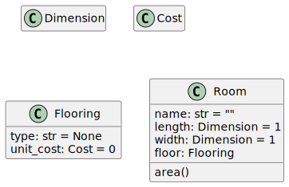

Design Discussion - Room Renovation
Thomas J. Kennedy
1 Overview
Let us revisit the Room Renovation scenario. More specificly, let us formalize the problem from the Review 2 and Review 3 Example Sets. While most of our design discussions will focus on a formal design a domain model before code is written approach… this discussion will include code design considerations.
2 Problem Scenario
You have been contacted by a colleague who has started to remodel his home. He would like to project the total cost of this remodel. His plan is to focus on part of the remodel at a time (starting with flooring). He will later move onto other aspects of each room (e.g., walls, trim, and appliances).
He would like to record the dimensions of each room, determine the total area of the room, and the total cost of flooring for the room. He will take his measurements in fake measurement units (i.e., feet). He has indicated that he would like the ability to use any measurement unit (e.g., meters).
He would also like to record the cost of flooring for each room. It is his intention to use tile in his kitchen and bathrooms and either laminate wood or hardwood flooring in all other rooms. He has indicated that he is primarily concerned with the cost of the flooring, but would like to record the type of flooring “if possible”.
After entering all this information, he would like to view a summary which includes the name of each room, unit cost of flooring (and ideally flooring type), room dimensions, total room flooring cost. After printing a summary for each room, he would like to be presented with a grand total (i.e., the overall renovation cost).
3 Selecting & Identifying Classes
Let us identify the things we have. Let us start with noun phrases.
You have been contacted by a colleague who has started to remodel his home. He would like to project the total cost of this remodel. His plan is to focus on part of the remodel at a time (starting with flooring). He will later move onto other aspects of each room (e.g., walls, trim, and appliances).
He would like to record the dimensions of each room, determine the total area of the room, and the total cost of flooring for the room. He will take his measurements in fake measurement units (i.e., feet). He has indicated that he would like the ability to use any measurement unit (e.g., meters).
He would also like to record the cost of flooring for each room. It is his intention to use tile in his kitchen and bathrooms and either laminate wood or hardwood flooring in all other rooms. He has indicated that he is primarily concerned with the cost of the flooring, but would like to record the type of flooring “if possible”.
After entering all this information, he would like to view a summary which includes the name of each room, unit cost of flooring (and ideally flooring type), room dimensions, total room flooring cost. After printing a summary for each room, he would like to be presented with a grand total (i.e., the overall renovation cost).
4 Identifying Operations & Member Functions
We will follow an informal CS 200-level approach to selecting member functions–i.e., we will add functions based on programmatic requirements. We will discuss the formal approach in a future lecture.
5 Collecting Candidate Classes
Let us collect a list of all noun phrases (potential classes).
- Colleague
- Home
- Total Remodel Cost
- Part of the Remodel
- Flooring
- Other Aspects
- Wall
- Trim
- Appliance
- Room Dimensions
- Total Room Area
- Total Cost of Flooring
- Measurement Units
- Feet
- Meters
- Cost of Flooring
- Type of Flooring
- Unit Cost of Flooring
- Summary
- Room Name
- Grand Total (Overall Renovation Cost)
5.1 Pruning the List
ColleagueHomeLet us use the more apt term HouseTotal Remodel CostDuplicatePart of the RemodelLet us use the more apt term Aspect- Flooring
Other AspectsAspect- Wall
- Trim
- Appliance
- Room Dimensions
- Total Room Area
- Total Cost of Flooring
- Measurement Units
- Feet
- Meters
- Cost of Flooring
- Type of Flooring
- Unit Cost of Flooring
Summary- Room Name
Grand Total(~~Overall~~ Renovation Cost)
5.2 Finalizing the List
- House
Other AspectsAspect- Flooring
WallTrimAppliance
- Room
- Name
- Dimensions (length, width, & height)
- Area
- Flooring
- Type (Name)
- Cost
- Unit Cost
- Linear Measurement Units
FeetMeters
Summary- Renovation Cost
5.3 The Final List
- House
- Room
- Name
- Dimensions (length, width, & height)
- Area
- Flooring
- Type (Name)
- Unit Cost
- Flooring Cost
- Linear Measurement Units
- Renovation Cost
- Total Flooring Cost
- Average Flooring Cost
5.4 The Final List… Again
- Linear Measurement Units
- House
- Renovation Cost
- Total Flooring Cost
- Average Flooring Cost
- Room
- Name
- Dimensions (length, width, & height)
- Area
- (Aspect) Flooring
- Type (Name)
- Unit Cost
- Flooring Cost
6 Implementation Driven Design
One of the reasons our Proper Design Discussions will focus on a domain model (i.e., understanding the problem) is the fact that you cannot design and write code if the underlying problem is not understood. (Everyone has been too eager to write code before… then realized they took the wrong approach, scrapped some code, and started over.)
This section will go through how the Room class would be designed… if language specific considerations are made.
6.1 Beginnings of a Room Class (in C++)
This brings us to Review Example Sets 2 and 3.
typedef double Dimension;
typedef double Cost;
struct Flooring {
std::string type;
Cost unitCost;
};
class Room {
public:
const std::string UNITS;
private:
std::string name;
Dimension length;
Dimension width;
Flooring floor;
public:
...
};
After some reorganization… we end up with…
typedef double Dimension;
typedef double Cost;
class Room {
public:
const std::string UNITS;
struct Flooring {
std::string type;
Cost unitCost;
};
private:
std::string name;
Dimension length;
Dimension width;
Flooring floor;
public:
...
};
This brings us back to the start of Review 2. Revisit our discussions (both the example code and recordings).
6.2 Refining the Room ADT (C++)
Possible Changes - Let us consider the following:
- Does it make sense for
Costto exist with the global scope?/** * Monetary cost. Note that in a non-academic setting, * this would likely be represented by a more robust * Money ADT--or API. */ typedef double Cost; - Does it make sense for
Flooringto exist within theRoomscope?class Room { public: ... struct Flooring { std::string type; Cost unitCost; }; ... }; -
Can we restructure our Dimension code into an inner class? Should we?
typedef double Dimension; class Room { ... private: Dimension length; Dimension width; Flooring flooring; public: ... void setLength(Dimension v); Dimension getLength() const; void setWidth(Dimension v); Dimension getWidth() const; double area() const; ... }; -
Can we spruce up the constructors with initializer lists?
Room::Room() { this->length = 1; // length = 1; this->width = 1; this->flooring.unitCost = 1; } Room::Room(Dimension l, Dimension w, Cost c) { length = l; width = w; flooring.unitCost = c; }
6.3 Beginnings of a Room Class (Python)
A C++ or Java programmer would probably start with something the lines of…
Dimension = float
Cost = float
@dataclass
class Flooring:
type: str
unit_cost: Cost
class Room:
UNITS: str = "ft";
def __init__(self):
name: str = ""
length: Dimension = 1
width: Dimension = 1
floor: Flooring = Flooring()
def area(self) -> float:
pass
The type aliases (i.e., Dimension and Cost) exist due to considerations we might need to make for rounding (e.g., rounding money to two decimal places). Flooring has two fields… which make it a perfect candidate for a dataclass. However, I would like to set some default values.
@dataclass
class Flooring:
type: str = None
unit_cost: Cost = 0
Now the call to Flooring() is valid. The next step is the UNITS constant. It is really a module level constant (since it applies to Dimension). It should be promoted to a module-level constant.
Dimension = float
Cost = float
UNITS: str = "ft";
@dataclass
class Flooring:
type: str = None
unit_cost: Cost = 0
Room should also become a dataclass…
@dataclass
class Room:
name: str = ""
length: Dimension = 1
width: Dimension = 1
floor: Flooring = field(default_factory=Flooring)
def area(self) -> float:
pass
Note that when calling a function to set a default value for an entry (data member) in a dataclass… that function must be provided as a default_factory). However… what all of that means will be part of our future Python discussions.
6.4 The Punch Line…
The implementation considerations, regardless of language, do not actually help us towards our goal. We need to understand what a Room is… what Flooring is…
Discussion of implementation details (e.g., public vs private) is premature.
7 UML Class Diagrams
A set of UML class diagrams is the real starting point. A complete discussion of UML Class Diagrams will be part of a future lecture. Let us start with a quick-and-dirty initial diagram.

Take note of how the structure of each class is captured. None of the language specific methods (e.g., toString for Java and __str__ for Python) are present. Our focus is on modeling what exists in the problem domain (i.e., the real world). Implementation decisions (e.g., using iterators and the Builder Pattern) come later.